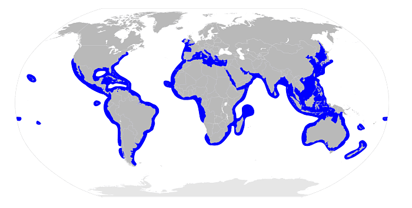
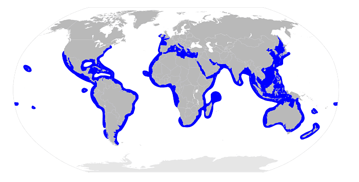
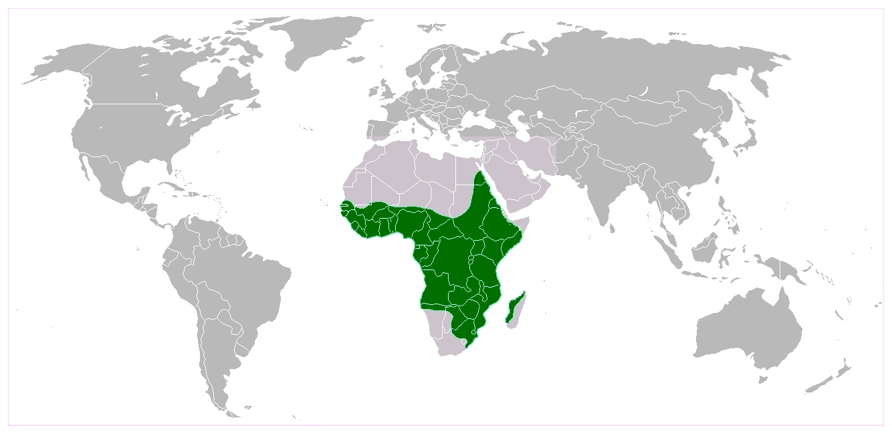
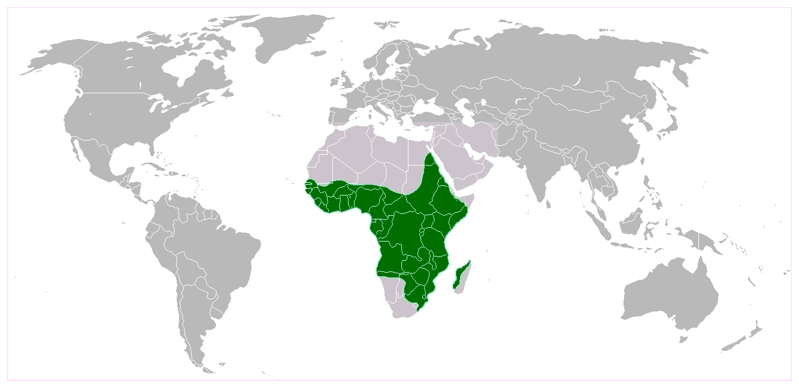

Animales Acuáticos Más Fuertes
Aquí conocerás algunos de los animales acuáticos más poderosos del planeta.
-
Tiburón Blanco:
Los tiburones blancos deben su nombre a su vientre blanco, pero su parte superior puede ser marrón o gris. Este marcado contraste entre coloraciones se conoce como contraluz y permite a muchas especies de peces mimetizarse con su entorno. La infame sonrisa del gran tiburón blanco está formada por siete filas de dientes serrados de 6 centímetros de largo. Aunque estos animales poseen unos 300 dientes en total, la mayoría no se utilizan para morder.
De los 100 o más ataques de tiburón registrados anualmente en todo el mundo, entre un tercio y la mitad son atribuibles al tiburón blanco. Las hembras son más grandes que los machos, de modo que estas llegan a medir unos 6 m, mientras que ellos unos 4 m aproximadamente. No obstante, cabe destacar que hay reportes de individuos de mayores dimensiones. En general, pesan más de una tonelada.El hábitat del tiburón blanco se encuentra cerca de zonas costeras, pero también en alta mar, es decir, en mar abierto. De este modo, es una especie principalmente pelágica.
Tiene preferencia por aguas templadas y puede hacer vida tanto cerca de la superficie como también a profundidades de unos 1 200 m. Es una especie generalmente solitaria, sin embargo, hay reportes que indican que pueden ir en parejas o pequeños grupos, de modo que se estima en estos casos el establecimiento de relaciones jerárquicas basadas principalmente en el tamaño de los individuos.
 
 -
Orca:
La orca, también conocida como ballena asesina, es un mamífero marino muy inteligente y social. Aunque es un delfín, la orca es el más grande de su especie, alcanzando hasta 9 metros de largo y un peso de 5,500 kg. Su dieta es variada, incluyendo peces, focas, delfines, y hasta ballenas.
Las orcas son conocidas por su capacidad para cazar en grupo, utilizando técnicas cooperativas para atrapar presas más grandes. Habitan en todos los océanos, desde las aguas frías del Ártico hasta las más cálidas, pero se encuentran principalmente en las aguas costeras y cercanas a las plataformas de hielo.
Las orcas cazan en manadas mortales, es decir, grupos familiares de hasta 40 individuos. Parece que hay poblaciones de orcas residentes y transitorias. Estos grupos pueden alimentarse de diferentes animales y servirse de varias técnicas para capturarlos.
Las orcas son mamíferos muy inteligentes y sociables. Aunque durante mucho tiempo han sido las protagonistas absolutas de los espectáculos de entretenimiento de los parques marinos, cada vez está más claro que las orcas no prosperan en cautividad.
Han evolucionado para nadar hasta 64 kilómetros al día, buscando comida y haciendo ejercicio. Se sumergen entre 30 y 150 metros a diario y varias veces al día.


-
Cocodrilo del Nilo:
El cocodrilo del Nilo es uno de los reptiles más grandes y peligrosos del mundo. Puede medir hasta 5 metros de largo y pesar más de 1,600 kg. Su mandíbula, extremadamente fuerte, tiene la capacidad de aplastar huesos con gran facilidad.
Es un depredador oportunista que se alimenta de una amplia gama de animales, incluyendo mamíferos, aves, e incluso otras especies de reptiles. A pesar de su aspecto feroz, el cocodrilo del Nilo tiene un lado sorprendentemente protector cuando se trata de sus crías. Las hembras construyen nidos en la orilla y vigilan sus huevos durante meses, defendiéndolos de depredadores como varanos o hienas. Cuando los pequeños cocodrilos nacen, la madre los transporta en su boca hasta el agua y los protege durante sus primeros meses de vida.
Este reptil ha tenido un papel importante en la cultura africana a lo largo de la historia. En el antiguo Egipto, era venerado como una manifestación del dios Sobek, asociado con la fertilidad y la fuerza. Sin embargo, en la actualidad, es visto con miedo por las comunidades que habitan cerca de los ríos, ya que es responsable de numerosos ataques a personas.
Se encuentra principalmente en los ríos, lagos y pantanos del continente africano. Su gran tamaño y fuerza lo hacen una de las criaturas más temibles de su hábitat, y se le considera uno de los depredadores más eficaces.
 
